Here at TAC we provide the following services:
Accounting & Taxation
- Preparation of annual financial statements & tax returns
- Advising on tax strategies in all facets including Income Tax, GST, Capital Gains Tax, Fringe Benefits Tax and more
- Taxation reviews
- Liaising with the Australian Taxation Office
- Preparation and electronic lodgement of Income Tax Returns for all types of entities
Business & Financial Management
- Establishment of suitable business structures to meet your needs
- Preparation/review of regular management accounts (Monthly, Quarterly and Semi-Annual)
- Performance and measurement analysis
- Budget, cash flow and investment forecasting
- Business investment strategies
- Assistance with establishment of business systems, procedures & records
- Business plan reviews
- Business evaluations and benchmarking
- Asset protection strategies
- Payroll management
- Accounts receivable / payable management
- Business Continuance / Buy Sell Agreements
- Income Continuance Plans
Computer Service
- Advise on computer hardware and software requirements
- Software training on a variety of software packages to suit your business needs
- Preparation and development of financial models, spreadsheets and flowcharts
- Data processing services
Finance
- Debt management and reduction strategies
- Debt restructuring and consolidation
- Creditor negotiation and mediation
- Advice on different business and property financing options
- Assistance with obtaining business finance (Overdraft Facilities, Hire Purchase, Leases, Term Loans etc)
Property
- Financial feasibility
- Real Estate funding (commercial and residential)
- Property development feasibility and funding
- Joint Venture/Trust structuring
- Negative gearing evaluations
Secretarial Services
- Company incorporation and business name registration
- Advice and preparation of share and director changes
- Maintenance of Company Registers
- Preparation and Lodgement of Company Annual Returns
- Deregistration of companies
Superannuation
- Preparation of superannuation investment & planning strategies
- Establishment of self-managed superannuation funds
- Liaising with the ATO & APRA
- Preparation and lodgement of annual returns and forms
- Advise and assistance with Superannuation Guarantee Levy requirements
 
